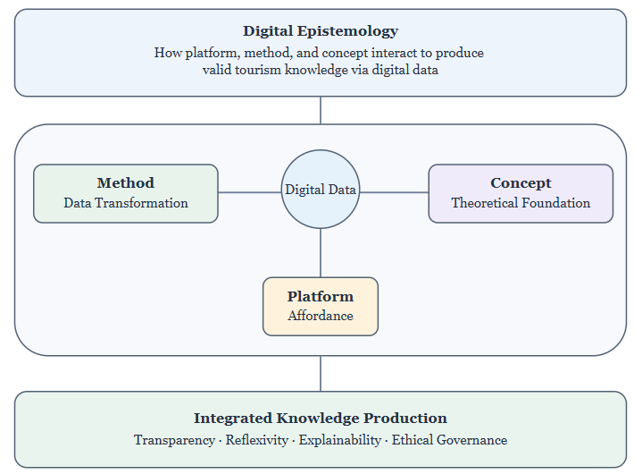
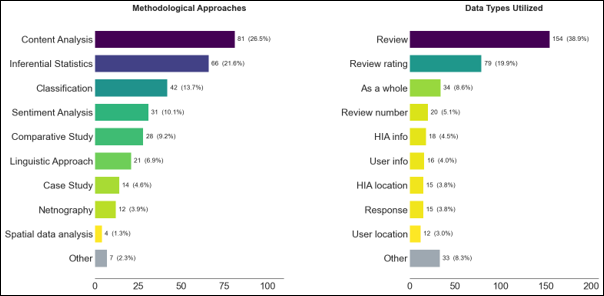
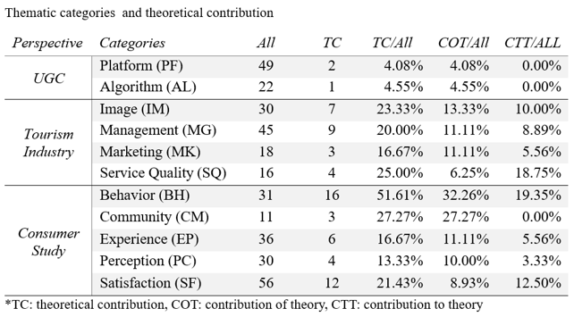
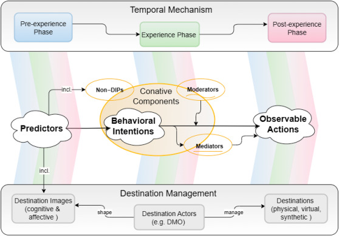
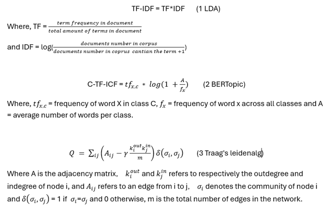
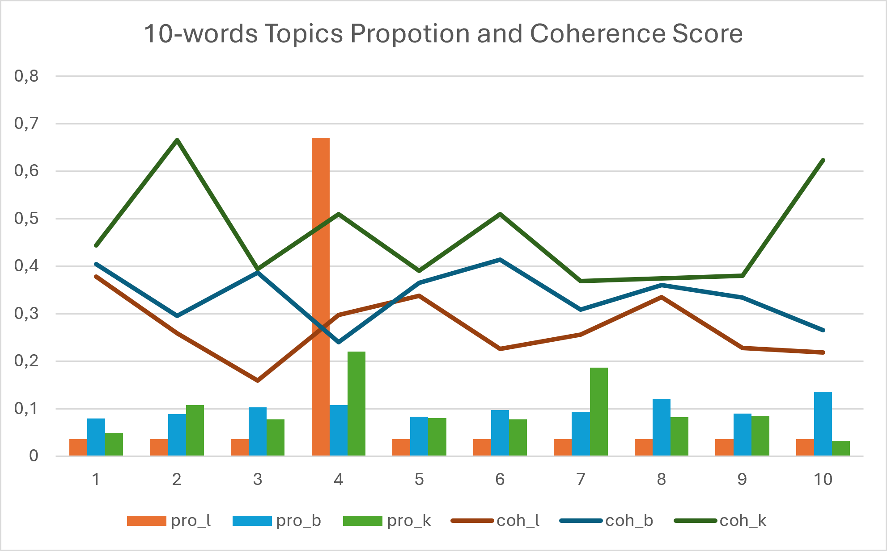

234 studies
A systematic review of TripAdvisor-based research published from 2010 to 2023.
Lectio Praecursoria
A Tourism Platform-Method-Concept Digital Epistemology
You ask ChatGPT or Gemini: “Where should I eat tonight?”
A useful recommendation may guide a decision. Research must also examine its evidence, assumptions, and analytical process.
Illustrative opening scenario. The dissertation does not empirically investigate ChatGPT or Gemini recommendation systems.
Platform · Article I
Digital reviews are evidence about experiences, but platforms shape the evidence available to us.
A systematic review of TripAdvisor-based research published from 2010 to 2023.
Reviews are treated as authentic expression, while platform mediation receives less attention.
Ranking, filtering, suppression, and amplification shape what researchers can access.


Extends Tribe and Liburd’s tourism knowledge system. Geographic and linguistic imbalances also shape the research record.
Concept · Article III · eCFTD

“It looks peaceful. I value nature activities. My friends recommend it, and the visit seems manageable.”
Beliefs and feelings; attitude; social encouragement; perceived feasibility.
“I plan to visit next month and book the guided walk.”
A plan to act—not evidence that the visit or booking occurred.
“I choose a date and check the bus. The shorter route gives me confidence to participate.”
Action planning: concrete arrangements.
Self-efficacy: confidence in execution.
“I still want to go weeks later. But I cannot join the evening tour: the last bus leaves too early.”
Intention stability: wanting persists.
Time, transport, and resources shape what is possible.
“I bought a ticket, joined the daytime walk, and recommended it to colleagues.”
Purchase, participation, and recommendation are distinct actions. Reports still need assessment.
“The visit changed my view. I posted a review and now intend to return.”
Experience updates image. The review may shape another visitor’s image and intentions.
Fictional rectio example, not the original framework figure. Constraints can interrupt the pathway; the stages can recur throughout a visit. eCFTD remains subject to empirical testing.
Method · Article II · KPTopic
KPTopic organizes adjectives, nouns, and verbs into inspectable semantic networks.
“The room was veeerry clean👍, the staff were friendly, and I would recommend the hotel.”
Inspect the steps from raw reviews to the analytical output.
Trace nodes and edges back to the source material.
Preserve connected expressions, rather than only isolated keywords.


Demonstrated on 11,729 TripAdvisor reviews from Finnish municipalities; compared with LDA and BERTopic. “Would recommend” and “recommended” require contextual examination: a verb node alone cannot distinguish them.
Three layers · One knowledge-production problem
A convincing result is not enough. We must be able to examine its foundations.
What shaped the evidence? Whose voices are visible or missing?
How did the analysis transform the evidence into this result?
Are the constructs coherent? Do they distinguish intention from action?
Next steps: integrated testing of KPTopic and eCFTD, multilingual and cross-platform validation, and reassessment as tourism content becomes increasingly synthetic.
Public Defence · Doctoral Dissertation · Marketing
UEF Business School
Peng A. Yang
Professor Berta Ferrer-Rosell
Professor Juho Pesonen
Associate Professor Heli Hallikainen
Professor Juho Pesonen
Joensuu,Finland · 6.11.2026
This doctoral journey has been shaped by thoughtful guidance, generous support, and collaboration across countries.
Professor Juho Pesonen
Associate Professor Heli Hallikainen
For your guidance, rigorous scholarship, and sustained support throughout this journey.
Professor Berta Ferrer-Rosell
Professor Heikki Karjaluoto
For your careful evaluation and insightful comments that strengthened the dissertation.
Liikesivistysrahasto
The Foundation for Economic Education for the financial support that made this work possible.
UEF Business School
Leaders and colleagues
For a supportive research environment, shared ideas, and collegial encouragement.